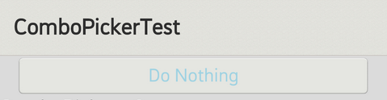
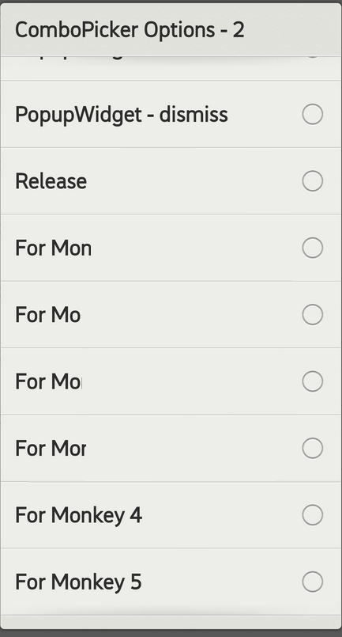

ComboPicker provides a more compact way to present a list of choices. The list is hidden until the users click the drop-down arrow. The system will trigger an event to tell the running application what item was selected by users. Creating a ComboClickListener and combining with ComboPicker, if the event needs to be handled.

ComboPicker displays a list of choices and the list was anchored to ComboPicker by calling setItemList(). The list content can be prepared by developers previously or be generated during the running time dynamically.
gaia::base::StringArray instringArray(12);
instringArray.replaceAt("January", 0);
instringArray.replaceAt("February", 1);
instringArray.replaceAt("March", 2);
instringArray.replaceAt("April", 3);
instringArray.replaceAt("May", 4);
instringArray.replaceAt("June", 5);
instringArray.replaceAt("July", 6);
instringArray.replaceAt("August", 7);
instringArray.replaceAt("September", 8);
instringArray.replaceAt("October", 9);
instringArray.replaceAt("November", 10);
instringArray.replaceAt("December", 11);
mpComboTest->setItemList(instringArray);

If developers want to handle users selection, to design a class inherited from ComboClickListener and then combine the listener with ComboPicker. Since onClick() is a virtual function of ComboClickListener, developers are able to implement their own procedure there.
class MyComboClickListener : public gaia::ui::ComboClickListener
{
public:
Scene* mScene;
gaia::core::Page* mPage;
MyComboClickListener(Scene* pScene) { GLOGENTRY(); mScene = pScene; };
MyComboClickListener(EmptyPageTest* pPage) { GLOGENTRY(); mPage = pPage; };
~MyComboClickListener() { GLOGENTRY(); };
void onClick(int position, long long id, const gaia::base::String& str){
printf("Position=%d ID=%lld, str=[%s]", position, id, str.string());
};
};
Combining the listener with ComboPicker
gaia::ui::ComboClickListener *mpListener = new MyComboClickListener(static_cast<Page*>(this));
mpComboTest->setListener(mpListener);
class MyComboClickListener : public gaia::ui::ComboClickListener
{
public:
Scene* mScene;
gaia::core::Page* mPage;
MyComboClickListener(Scene* pScene) { GLOGENTRY(); mScene = pScene; };
MyComboClickListener(EmptyPageTest* pPage) { GLOGENTRY(); mPage = pPage; };
~MyComboClickListener() { GLOGENTRY(); };
void onClick(int position, long long id, const gaia::base::String& str){
printf("Position=%d ID=%lld, str=[%s]", position, id, str.string());
};
};
void EmptyPageTest::onInit(Persistence* const p)
{
gaia::ui::LinearController* ll = new gaia::ui::LinearController(static_cast<Page*>(this));
ll->setOrientation(gaia::ui::LinearController::VERTICAL);
gaia::base::StringArray instringArray(12);
instringArray.replaceAt("January", 0);
instringArray.replaceAt("February", 1);
instringArray.replaceAt("March", 2);
instringArray.replaceAt("April", 3);
instringArray.replaceAt("May", 4);
instringArray.replaceAt("June", 5);
instringArray.replaceAt("July", 6);
instringArray.replaceAt("August", 7);
instringArray.replaceAt("September", 8);
instringArray.replaceAt("October", 9);
instringArray.replaceAt("November", 10);
instringArray.replaceAt("December", 11);
mpComboTest = new gaia::ui::ComboPicker(static_cast<Page*>(this));
gaia::ui::ComboClickListener *mpListener = new MyComboClickListener(static_cast<Page*>(this));
mpComboTest->setListener(mpListener);
gaia::base::String str("Test:ComboPicker Title");
mpComboTest->setTitle(str);
printf("Title=%s", mpComboTest->getTitle().string());
mpComboTest->setItemList(instringArray);
ll->addWidget(mpComboTest);
mScene->attachController(ll);
mScene->setupSceneLayout();
}